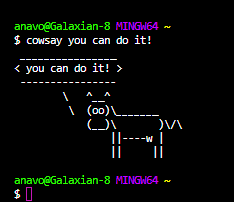

Blogs & Poetry by DJ Sexy Ana
Written with love
The Best Summer Ever 😎 - June 6, 2022 | 7:02 am
It's a new month already. Welcome, June. I'm glad to be here and excited to share new things. Last month, I made a song called Lemon Yellow Hummer. I'm proud of that song, and it makes me happy to listen to it. So, what have I accomplished since then?
I've realized that making music just makes me happy. It's another outlet for me to express my creativity and is not exactly suitable for me as a career. I've invested a lot of time and resources into pursuing music and will continue to make music as a hobby.
As far as my career planning goes, I've decided to pursue computer programming. I've been on and off with this subject for the past three years. I spent a few hours researching on job boards and freelancing platforms to see what employers were seeking in a full-stack developer. Everything from knowing React, Node, JavaScript, TypeScript, MySQL, and specific languages to the company's needs, plus a bachelor's degree and a few years in the field, were either required or strongly preferred.
With that in mind, I contacted the junior college near me and decided to enroll in classes for this upcoming semester. I filled out the applications, gathered my documents, and failed the math test. It's been ten years since the last time I solved an algebraic equation that I understood. As I write this, I have a tab open on YouTube about Advanced Algebra and Functions. I have to retake the test and do well or settle with paying for and attending remedial math classes.
Then, I went on Udemy and bought all the fundamental programming languages I mentioned earlier. A total of 505 hours that I'm taking hour by hour. By the time the fall semester begins, I can build small projects on my own while working towards my degree.
Yesterday, I made a checklist for everything I wanted to accomplish in a single day because everything great begins with a single effort to try. If I finish these courses by mid-July, I might be able to release an album before school starts!
The Beginning of Besties & Homegurls - May 6, 2022 | 8:04 pm
These past nights, I've been up and awake till 3am. I just finished watching online videos made by Clinton Sparks, in this 3-day workshop. It was about understanding music as a business and how to get started with it. Before I decided to pursue music as a career, I knew that it was going to be the biggest investment of my life.
Just last month, I spent over $600 on FL Studio, a midi keyboard, headphones, microphone, accessories and online courses. This month, I've already gone through $500 on paperwork fees. After figuring the numbers out, I was speechless. I can't believe I'm going through with this.
I spent all my time in the month of April getting to know Fl Studio, finding my rhythm and making beats. I bought two courses that showed me the basics and tips of how to use it. I watched videos on youtube. I searched through Instagram looking for beatmakers. I signed up and watched a video on selling beats by Robin Wesley. With everything that I had, I played around with the DAW and made 5 different beats.
I went into May with a different perspective. First of all, I'm not Alicia Keys. I can't make beats like Cannons or DJ Snake. I can't, but what I can do is be me. So, I sat down at my desk. Beginning a new beat scared me because I never knew what to start with. This time around, I picked a drum sample, a synth for the chords and a bass. I put a few patterns together and in a matter of minutes, I had a rhythm. The melody gave me an unexpected vibe that strangely resonated with me. I opened notepad and literally, the lyrics wrote itself.
I wrote, recorded, produced and completed my first real song in the first week of May. I spent all day getting the vocals and lyrics right. I experimented with a new plugin that was driving me crazy in the first 2 days, but I had to know it because it produced the sound I wanted.
The song is inspired by my friends or, as I refer to them in the song, my besties and homegurls.
Crushing On Him 🏀 | 03/15/2022
Caleb Martin #16
For the Miami Heat 🔥
Damn. He's so fine! Everything about him turns me on.
You know what I want to do.
😈 I'm rarely wild about any guys. If only he knew.
God, can you hear me?
It's been a month and I'm still crushing on him. What's wrong with me?
I've never had the hots for a basketball player or any man in the public eye, except for Maluma and Nicky Jam.
I crushed on both of them at the same time for less than 2 weeks.
Caleb is different. I think he's special. Because of him, I have courage to pursue my real dreams.
I'll get there as soon as I can.
God, if you can hear me...
I'm trying.
You've always given me a hand.
Give me a sign if I'm being crazy, but if I'm not wrong, can you calm the current?
😎